1. Start here
Use the Salesforce connector when EBX must read, create, update, or upsert Salesforce sObjects, or when EBX Data Catalog must inventory Salesforce objects and fields.
Typical inbound flow
Look up an Account or Contact by Salesforce ID, external ID, or SOQL; transform Salesforce API fields; then apply governed updates to an EBX table.
Typical outbound flow
Take a selected EBX record, map it to an sObject document, and upsert it by a stable external ID so reruns do not create duplicates.
Supported authentication
OAuth client credentials is the recommended server-to-server flow. JWT bearer is also implemented. The password flow still works but is deprecated: Salesforce retires it on 20 February 2027.
What this guide covers
Configuration, mapping, simulation, controlled execution, read-back, catalog scanning, evidence, cleanup, and common failures.
Name, BillingCity, and LEI__c—not the labels shown to business users.2. How it works
The Salesforce connector operates inside a governed two-layer process. People define scope, verify policy, review the existing EBX configuration, simulate the payload, approve one bounded run, and sign off. The system performs the matching OAuth, diagnostic, mapping, execution, read-back, and audit steps underneath.
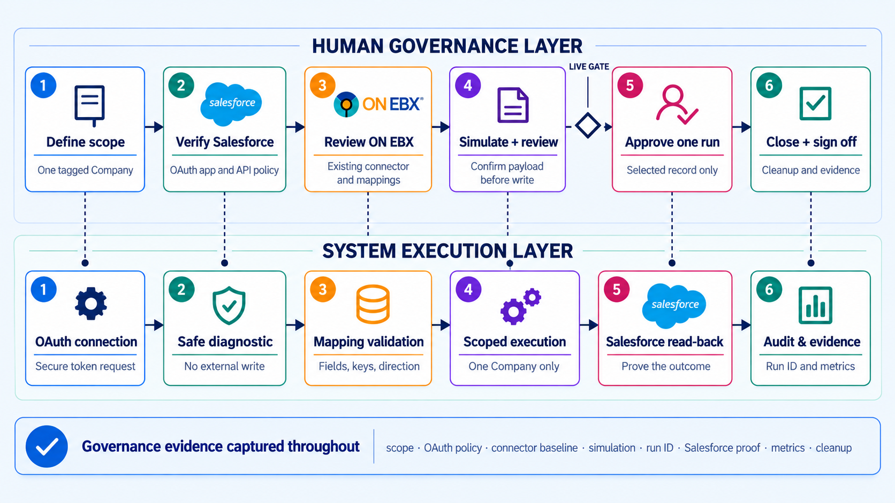
Endpoint composition
{instanceUrl}/services/data/{apiVersion}
Default API version
v60.0; override with the connector property apiVersion.
Token behavior
Tokens are cached until shortly before expiry. A 401 clears the cached token and causes one fresh login.
Safety boundary
Simulation calculates the request without sending it. Live execution should be limited to an explicitly approved record set.
3. Before you begin
- An active Salesforce org with API access and a stable My Domain or login endpoint.
- A dedicated integration user or run-as identity. Avoid a human administrator account.
- A Salesforce External Client App or Connected App with the appropriate OAuth flow.
- For idempotent upsert: a Salesforce custom field marked External ID and ideally Unique.
- Permissions to view connector configuration and maintain mappings in EBX.
- A known, disposable record for the first end-to-end test.
Account.LEI__c as the external ID and derives its value from the EBX Company Legal Entity Identifier. Choose a key that is stable, unique, and present on both sides.4. Configure Salesforce
Create or open the OAuth application
In Salesforce Setup, open External Client App Manager (or Connected Apps in orgs using the older model). Use a dedicated application for EBX.

Grant API scope
Add the scope that permits Salesforce API access. Do not add scopes unrelated to the mappings or catalog use case.

Enable client credentials
Enable OAuth client credentials and assign a dedicated run-as user. Record the consumer key and transfer the consumer secret directly to the EBX encrypted secret field.

Permission design
The run-as identity needs API Enabled, object permissions for only the sObjects used, and field-level access to each mapped field. Grant create/edit only if an outbound mapping needs it. Delete, Modify All Data, and a System Administrator profile are not required by the normal synchronization flow.
5. Configure the EBX connection
Open the Salesforce connector record in the connector catalog and complete the connection fields. Save only after checking the non-secret values.
| Field / property | Value | Notes |
|---|---|---|
| Implementation | Salesforce REST OAuth 2.0 | Connector type is salesforce. |
| Base URL | https://login.salesforce.com or My Domain | Use the approved production or sandbox domain. Do not append the REST path. |
| Authentication | OAuth 2.0 | The Salesforce connector performs its own token exchange. |
clientId | Consumer key | Required for every supported flow. |
| API key / secret | Consumer secret | Required and encrypted. |
oauth.flow | client_credentials | Recommended. Alternative: jwt_bearer. password is deprecated (retired by Salesforce on 20 February 2027). |
apiVersion | v60.0 | Default. Change only when the org and release policy require it. |
instanceUrl | Optional instance URL | Advanced override; normally use the URL returned by OAuth. |
| Timeouts | Environment policy | The acceptance baseline used 10-second connect and 30-second read timeouts. |

Alternative OAuth flows
Password flow (deprecated)
Salesforce retires the OAuth 2.0 username-password flow on 20 February 2027; logins with it fail from that date. Existing connections with oauth.flow=password (username, password and securityToken) keep working until then, and the connector diagnostics show a warning for them. Do not configure it for a new connection; move existing ones to client credentials or JWT bearer.
JWT bearer flow
Set oauth.flow=jwt_bearer, provide the username and oauth.privateKey certificate material, and configure the corresponding Salesforce app certificate.
Validate without writing
Run the connector diagnostic. A successful diagnostic proves token acquisition and an authenticated REST call, but it does not prove object- or field-level write access.
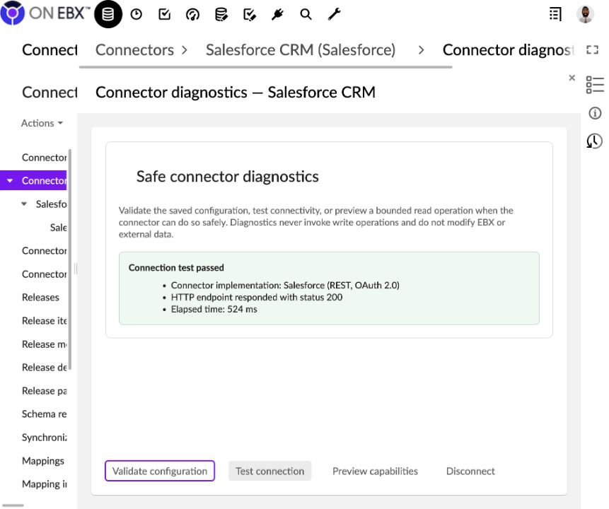
6. Choose an operation
| Operation | Direction | Required inputs | Result / purpose |
|---|---|---|---|
get | READ | sobject, id | One sObject by Salesforce record ID. |
getByExternalId | READ | sobject, externalIdField, value | One sObject using a configured external ID. |
query | SEARCH | soql | SOQL response; records are under records[]. |
describe | READ | sobject | Salesforce field metadata; also powers field discovery. |
create | WRITE | sobject | Create from the outbound document. |
update | WRITE | sobject, id | PATCH an existing record by Salesforce ID. |
upsert | WRITE | sobject, externalIdField, value | PATCH by external ID; recommended for repeatable synchronization. |
catalog | SEARCH | source | Inventory sObjects and describe their fields. |
profile | SEARCH | source | Compute field statistics on recent records. |
sample | SEARCH | source | Collect distinct values from text fields for classification. |
query mappings refer to fields as records[0].Name. Direct get, getByExternalId, and describe-backed mappings use Name directly.7. Build data flows and mappings
The accepted Account example has two flows: Salesforce Account → EBX Company and EBX Company → Salesforce Account.
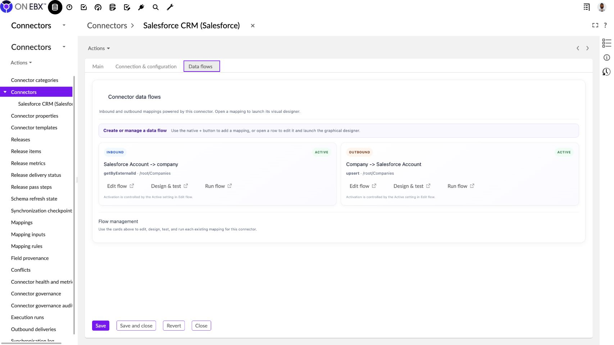
Inbound: Salesforce Account to EBX Company
Use getByExternalId for a bounded lookup. Set sobject=Account, externalIdField=LEI__c, and calculate value from the current EBX Company LEI. Map Salesforce API fields to EBX fields and choose an update policy deliberately.
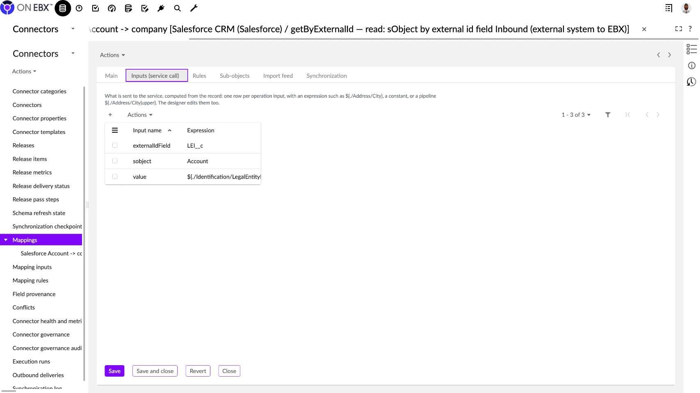
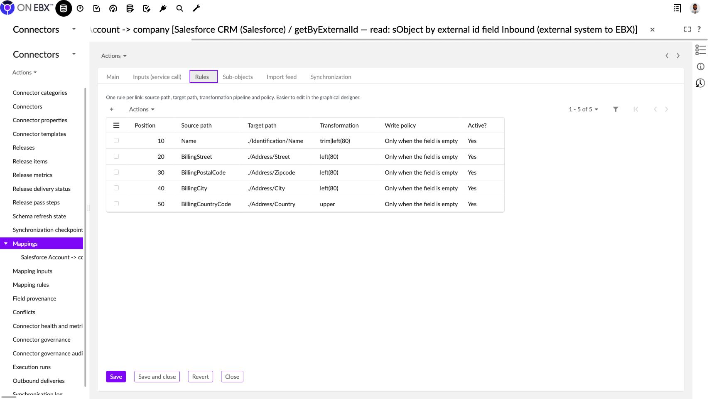
Outbound: EBX Company to Salesforce Account
Use upsert, not create, when the same governed entity may be sent more than once. Key the operation with LEI__c and map only the approved fields.
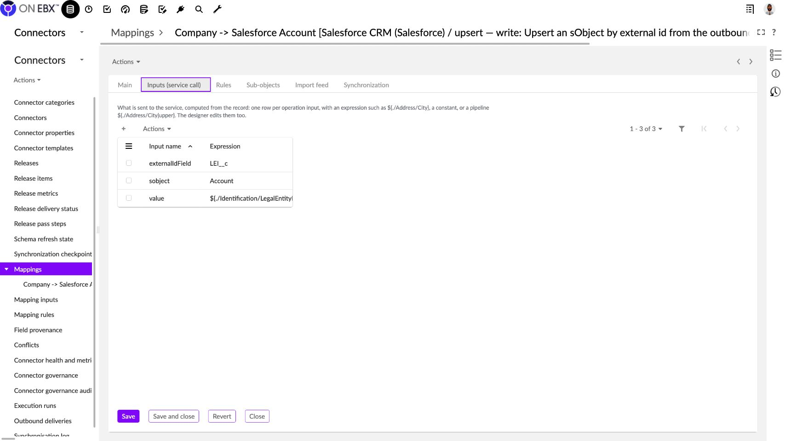
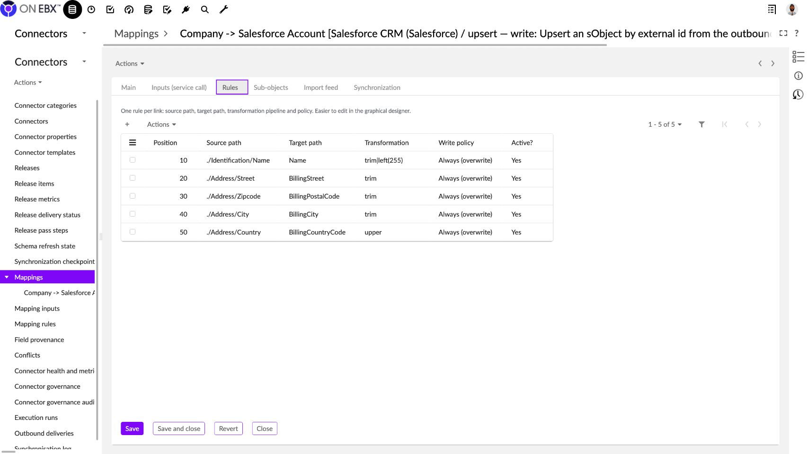
Operation: upsert
sobject: Account
externalIdField: LEI__c
value: <current EBX Company LEI>
Example mapped document:
{
"Name": "<company name>",
"BillingStreet": "<address>",
"BillingCity": "<city>",
"BillingPostalCode": "<postal code>",
"BillingCountry": "<country>"
}8. Run a synchronization safely
Preserve the baseline
Record the connector identity, endpoint, auth mode, timeouts, trust level, mapping IDs, operations, inputs, rules, and activation state. Confirm that the encrypted secret is populated without exporting it.
Choose one known record
Use selected-record scope. Verify that the external ID resolves to zero records before an initial create, or exactly one record before an update. Stop on ambiguity.
Simulate inbound
Expected safe outcomes include NO_DATA when the Salesforce target does not exist or NO_CHANGE when it matches. Confirm zero unexpected EBX changes.
Simulate outbound
Confirm DRY_RUN, the intended sObject, external ID, calculated value, record count, and mapped payload. Nothing should be sent.
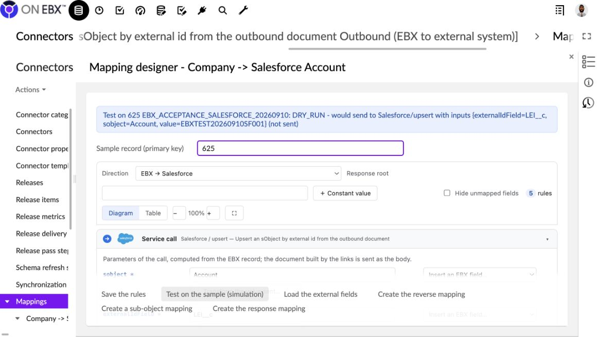
Perform the bounded live write
Disable simulation only after approval. Reconfirm selected-record scope, mapping, and cardinality immediately before submission.
Read back in Salesforce
Verify the Account or Contact using the exact external ID. Check the expected fields and confirm there is exactly one matching record.
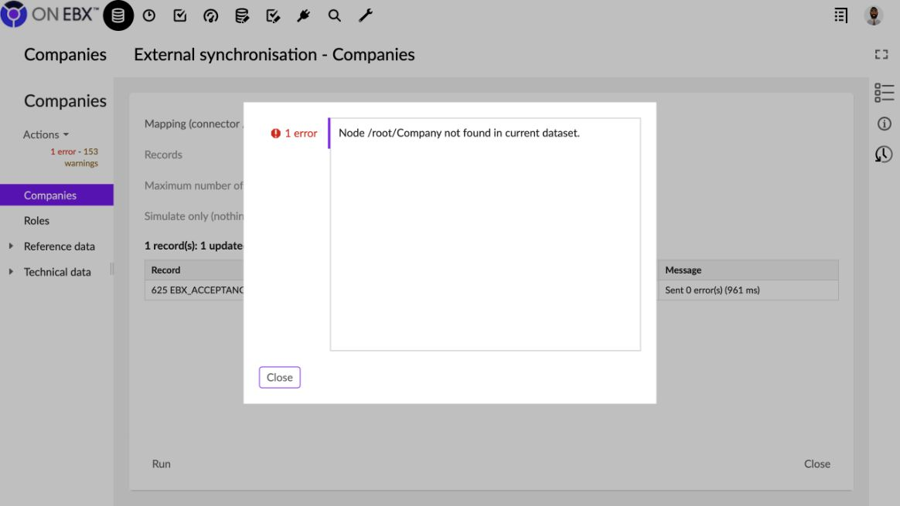

Rerun to prove idempotency
Execute the same upsert again. The exact Salesforce search must still return one record, not a duplicate.

Verify reciprocal inbound behavior
Run the inbound lookup against the same external ID. A clean NO_CHANGE is a valid proof that the remote record was found and no unintended update was needed.
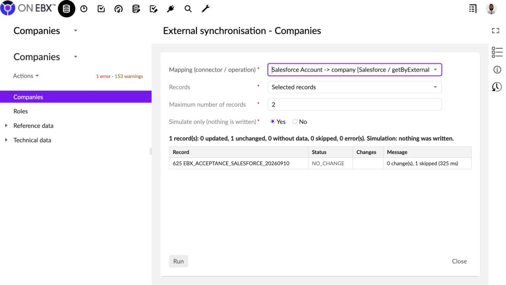
9. Catalog, profile, and sample Salesforce
The connector can supply Salesforce metadata and sampled statistics to EBX Data Catalog without defining a hand-written mapping for every sObject.
| Input | Applies to | Behavior |
|---|---|---|
source | All three operations | Required source identifier used in asset and column keys. |
schemas | All | Comma-separated sObject API names or * patterns. Default selects core standard objects and all custom __c objects. |
tables | Profile, sample | Optional API-name filter. |
rowCounts | Catalog, profile | Default true; uses SELECT COUNT(). |
sampleSize | Profile | Default 1000, bounded from 3 to 2000 recent records. |
limit | Sample | Limits recent records used for distinct text values. |
Selection and output rules
- Only queryable, visible, non-deprecated sObjects are selected.
- Catalog emits one table asset per sObject and field metadata from Salesforce Describe.
- Salesforce types are normalized for the catalog; for example currency → DECIMAL, datetime → TIMESTAMP, address → JSON.
- Profile and sample use the most recently modified records. Compound and binary fields are excluded from profiling.
- Sample considers text-like fields and omits IDs and references.
- An unreadable object is reported under
errorswhile other objects continue. If nothing can be read, the operation fails.
schemas or tables filter and schedule broader scans within Salesforce API limits.10. Monitor, audit, and recover
After every live run, inspect the synchronization log. Retain the run ID, mapping, direction, record counts, status, and error detail. Correlate the EBX run with a Salesforce read-back using the external ID.
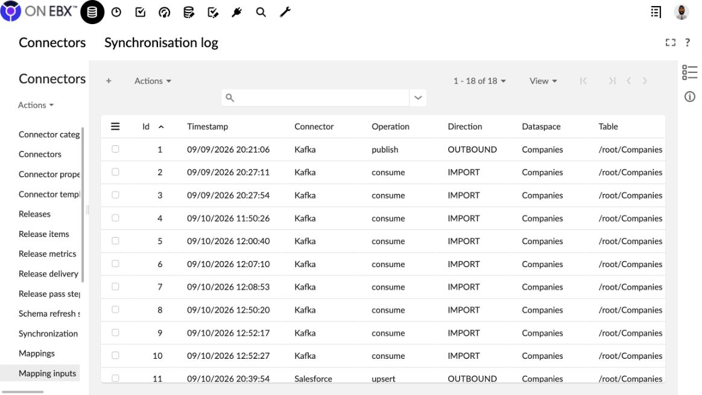
Failure recovery
- Stop further live executions.
- Preserve the input record, mapping configuration, run result, Salesforce response, and relevant audit evidence.
- Classify the failure: connector configuration, credentials/permissions, mapping, external data, environment, product implementation, or test defect.
- Make the narrowest correction in the responsible layer.
- Repeat simulation, then rerun only the failed bounded scenario and its focused regression checks.
- If test data must be removed, delete only the exact tagged Salesforce record, prefer the recoverable Recycle Bin, and verify the unchanged filter returns zero active records.

11. Security and governance
Least privilege
Use a dedicated integration identity with API Enabled plus only the necessary object and field permissions. Avoid System Administrator, Modify All Data, and delete access.
Secret hygiene
Keep consumer secrets, private keys, passwords, tokens, cookies, and authorization headers out of exports, evidence, logs, and screenshots.
Change control
Baseline connector and mapping settings before changes. Restore only approved non-secret values; retrieve secrets again from the approved secret store.
Data minimization
Use synthetic, clearly tagged test data and an invalid example domain. Never use unnecessary personal data for acceptance tests.
12. Troubleshooting
| Symptom | Likely cause | What to check |
|---|---|---|
| OAuth token request fails | Wrong endpoint, consumer values, flow, or app policy | Base URL, clientId, encrypted secret, enabled flow, API scope, and assigned run-as user. |
oauth.tokenUrl is not set | Generic OAuth path used instead of the Salesforce-specific login | Confirm the connector implementation is Salesforce REST OAuth 2.0 and the current connector build is deployed. |
| Diagnostic passes but write fails | Missing object or field permission | Create/Edit permission on the sObject, field-level access, external-ID field, and run-as profile/permission sets. |
| 404 on external-ID lookup | No matching record or wrong field/value | API name, External ID configuration, calculated value, whitespace, and target org. |
| Duplicate records | create used, non-unique key, or inconsistent calculated value | Use upsert; mark the Salesforce field External ID/Unique; compare the exact value on both sides. |
| SOQL field is blank in mapping | Wrong JSON path | For query, use records[0].FieldApiName; for direct reads, use FieldApiName. |
| Object missing from catalog | Not queryable, hidden/deprecated, or excluded by filter | Salesforce object permissions and schemas/tables patterns. |
| Some catalog objects fail | Salesforce blocks Describe, COUNT, or query for those objects | Inspect the returned errors[]; accessible objects may still have completed. |
Diagnostic: "Configuration is valid, with warnings" on oauth.flow | The connection uses the deprecated password flow | Enable client credentials on the Salesforce app (with a run-as user) and set oauth.flow=client_credentials before 20 February 2027. |
| 401 after previously working | Expired or revoked token / app policy change | The connector retries once with a fresh token; if it persists, recheck the OAuth app and run-as user. |
| Live action has wrong scope or mapping | UI context not carried into run form | Stop. Explicitly select the intended mapping and record; keep Simulate only enabled until verified. |
13. Quick reference
Recommended Account upsert
Connector: Salesforce
Base URL: https://<my-domain>.my.salesforce.com
OAuth flow: client_credentials
API version: v60.0
Operation: upsert
sobject: Account
externalIdField: LEI__c
value: <stable EBX legal-entity identifier>Go-live checklist
- OAuth app has API scope and the correct flow.
- Dedicated run-as identity follows least privilege.
- Connector diagnostic passes.
- External ID exists, is field-visible, stable, and unique.
- Inbound and outbound mappings use API names and approved update policies.
- Selected-record simulations show the expected payload and zero errors.
- Pre-write Salesforce cardinality is known.
- Live execution is explicitly approved and bounded.
- Salesforce read-back, idempotency rerun, reciprocal inbound check, and EBX audit are complete.
- Disposable test data is cleaned up and verified.